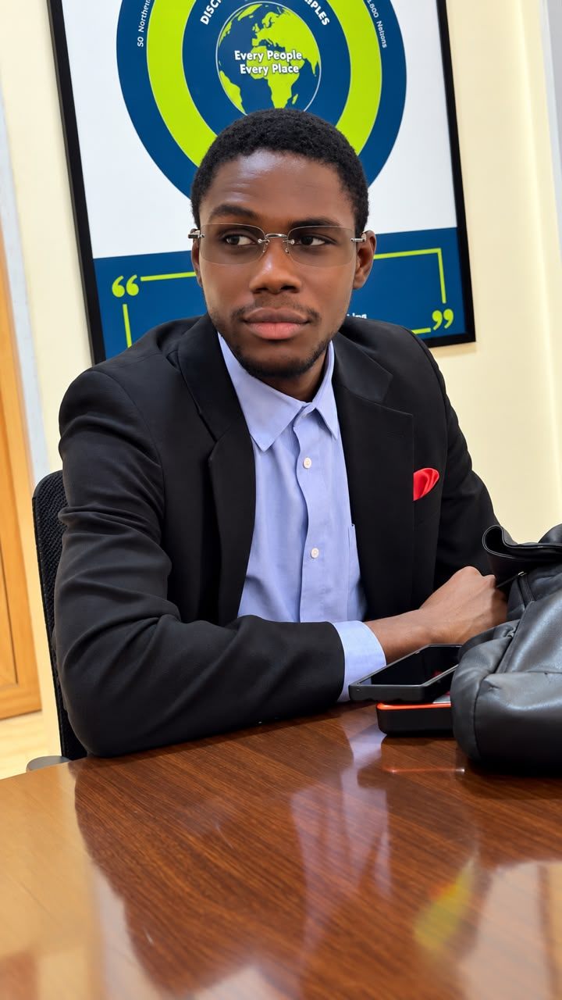

WEB DESIGN · DATA WORK · DIGITAL SUPPORT
Websites and data workflows, built with purpose.
I’m Taiwo Omoniyi, a Computer Science graduate who builds responsive websites and helps teams turn complex information into clear, usable workflows.
Based in Abuja, Nigeria • Available for web and data projects

TAIWO OMONIYIWeb design · data workflows
WEB DESIGN ✳ FRONT-END DEVELOPMENT ✳ DATA ORGANIZATION ✳ IT SUPPORT
01 / ABOUT
A practical approach to digital problems.
I earned an HND in Computer Science from Federal Polytechnic Bida. I enjoy building websites that are easy to use across phones and computers, then working through the details that make a digital tool useful.
At Perez Acume Professional Service Ltd, I supported bank statement review, spreadsheet organization, financial record handling and everyday technical tasks during my NYSC service year. That experience strengthened my attention to accuracy and practical problem solving.
Let’s talk about your projectEXPERIENCE
Where accuracy met action.
Perez Acume Professional Service Ltd · NYSC placement, 2025–2026
Supported the team with bank statement review, transaction data organization, Excel work, record handling and general computer support. I bring that same care for detail to the websites and workflows I build.
Read my CV02 / SELECTED WORK
Projects & ideas.
Real work and early stage concepts, clearly labelled so you can see what I built and what I am exploring.
ONE VOICE Home Services Book
RENTALS & DECORATIONMake the moment
memorable.Explore event services
01 / WEBSITEOne Voice Rental & Decoration
A responsive event services website with decoration and rental pages, project photography and clear paths for enquiries on mobile and desktop.
Responsive designHTML · CSS · JavaScript
Visit One Voice website
StatementFlow WORKFLOW CONCEPT
UPLOADBank file
REVIEWClean data
EXPORTReady report
02 / PROTOTYPEStatementFlow
An early prototype exploring how different bank statement formats can be standardized for review and classification.
Problem solvingData workflow
Prototype project
◧
▦
◫
OVERVIEWOperations at a glance
03 / INTERFACE CONCEPTOperations dashboard
An interface concept bringing booking activity, upcoming work and key figures into one readable view.
UI conceptInformation design
View concept code 03 / CAPABILITIESSkills that work together.
Practical skills shaped by real projects and an accounting firm placement.
01Web & interface design
HTML, CSS, JavaScript, responsive layouts and user-focused page structure.
02Data & Excel support
Bank statement review, data organization, validation and spreadsheet tasks.
03Digital operations
Computer troubleshooting, document handling and practical team support.